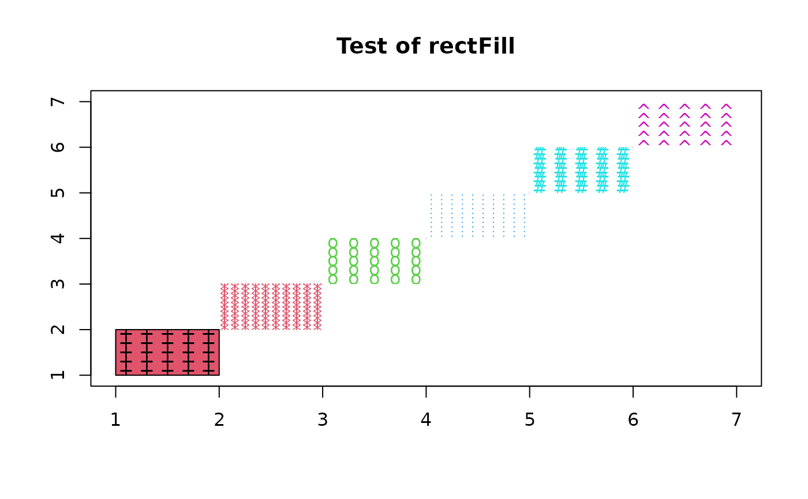
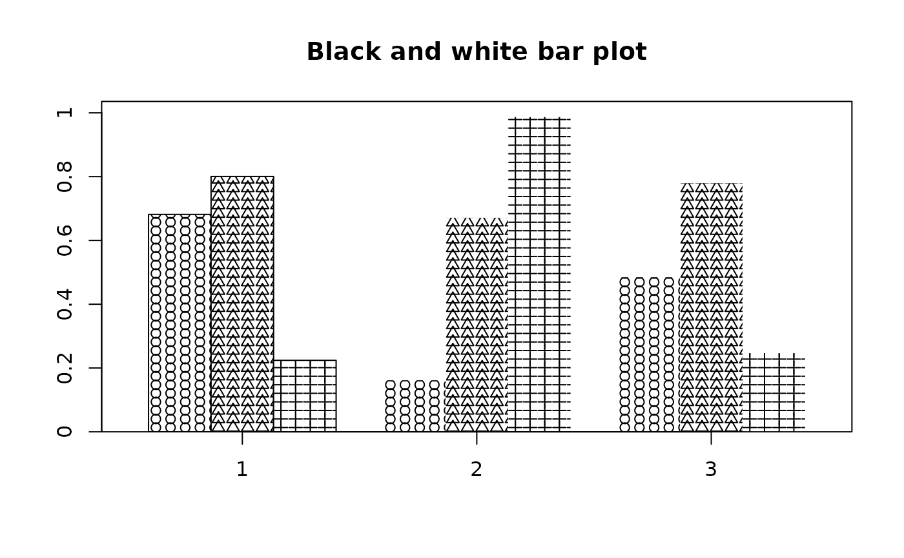

The x and y increments of spacing for the symbols.
pch
Which symbol to use
pch.cex
Character expansion for the symbols.
pch.col
Color(s) for the symbols.
...
Additional arguments to points for the symbols.
Details
rectFill draws a rectangle and fills the rectangle with the
symbols requested. It is probably most useful as a substitute for
fill colors in a black and white environment.
plot(1:7,type="n",xlab="",ylab="",main="Test of rectFill")rectFill(1:6,1:6,2:7,2:7,bg=2:7,pch=c("+","*","o",".","#","^"), xinc=c(0.2,0.1,0.2,0.1,0.2,0.2),yinc=c(0.2,0.1,0.2,0.1,0.2,0.2), pch.col=1:6)barp(matrix(runif(9),nrow=3),main="Black and white bar plot",pch=1:3)